Префектура Кумамото · онсэн Курокава · рёканы
Онсэн Курокава: четыре рёкана, одна деревня и масло с запахом японского кедра
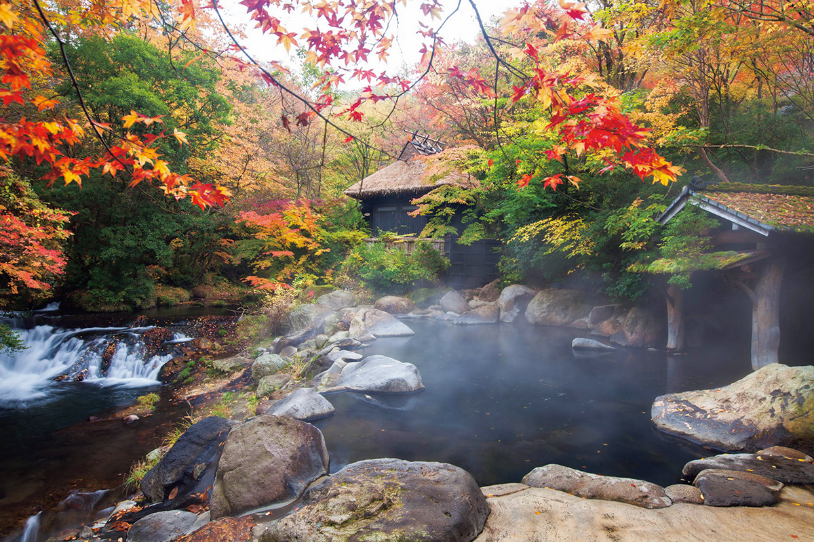
Онсэн Курокава, деревня горячих источников в горах префектуры Кумамото, давно называет себя одним большим рёканом. Летом 2024 года у этого рёкана появился собственный запах: масло Kloar из местного риса и кедра.
Идея
Деревня как один рёкан
Онсэн Курокава лежит в горах за кальдерой Асо, в посёлке Минамиогуни на севере префектуры Кумамото. Около тридцати лет назад здешние гостиницы договорились жить по принципу «Курокава онсэн, один рёкан»: вся деревня считается единой гостиницей, около тридцати рёканов в ней служат отдельными флигелями, а тропинки между ними становятся крытыми галереями. Гостиницы соблюдают общий облик, у каждой есть купальни под открытым небом, устроенные с учётом рельефа, и Курокава давно известна по всей Японии как тихий горный онсэн с хорошим вкусом.
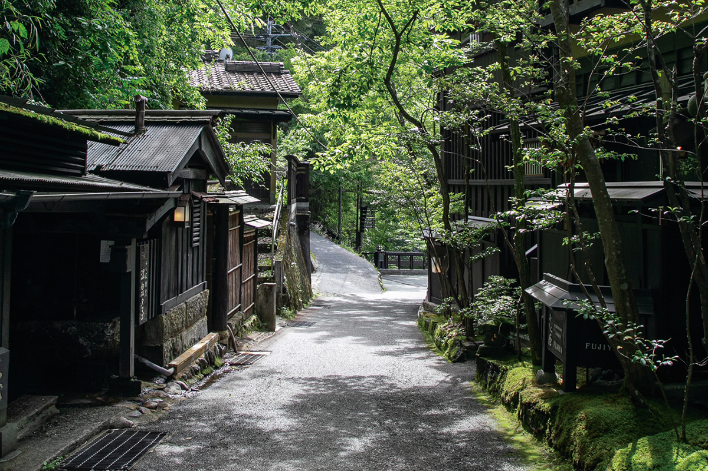
Из этой идеи выросла старая местная привычка «тэмпаку». Так называют поездку на несколько ночей, когда каждую ночь гость спит в другой гостинице. Рёканы при этом работают вместе: например, перевозят вещи гостя в следующую гостиницу. Для Японии это редкость, и в Курокаве к тэмпаку снова присматриваются.
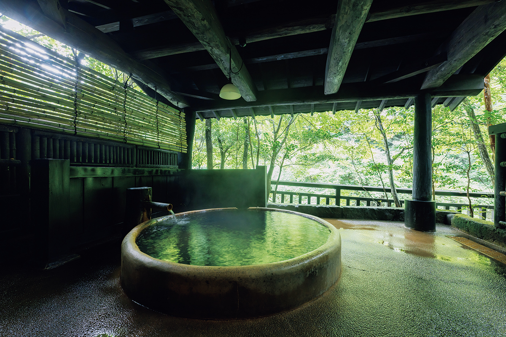
«Кухня, источники, убранство: каждая гостиница годами оттачивала своё, глядя на соседей. Хочется, чтобы гости, переезжая из одной в другую, почувствовали это сами»
молодая хозяйка Ryokan Sanga
Kloar
Масло из рисовых отрубей и кедровых веток
К 2024 году будущее Курокавы всё чаще берут в свои руки молодые. Первым начал глава рёканов Yamamizuki и Miyama-sansou. Он хотел сделать для гостей что-то особенное, чем можно пользоваться только здесь, и к нему присоединились Ryokan Sanga и «Оядо Носию». Вчетвером хозяева придумали общую фирменную косметику для своих гостиниц.
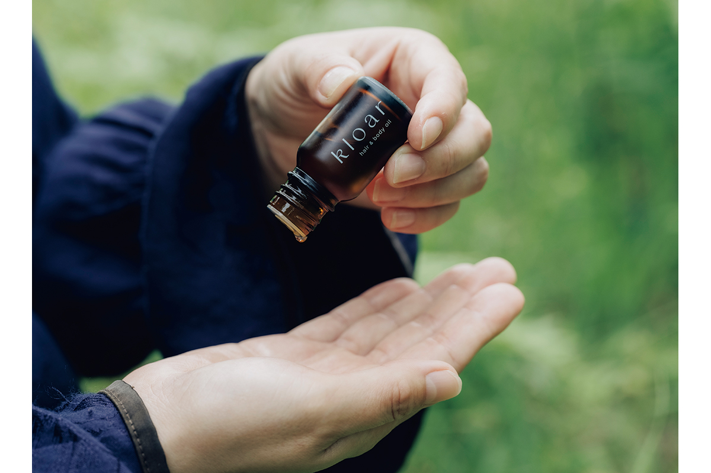
Идею подхватила местная компания RETEN, которая давно старается оживить Курокаву. Её глава создал марку Kloar, первую марку товаров для жизни родом из этого онсэна. Название придумано на основе английского слова folklore, «фольклор», и означает «вместе с Курокавой». Первым товаром летом 2024 года стало масло для волос и тела.
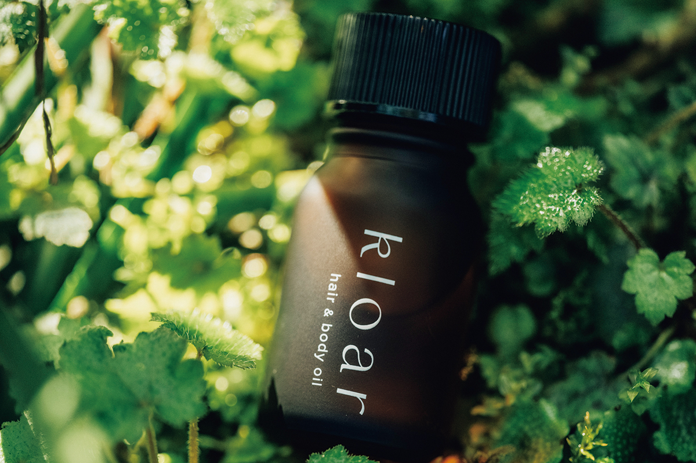
Минамиогуни богат чистой водой, а большая разница дневных и ночных температур делает его хорошим краем для риса. Основа масла это рисовые отруби: их берут у фермеров, которые выращивают рис без химикатов, когда шлифуют новый урожай. Отруби отжимают на собственном прессе. Получается свежее масло с высоким содержанием питательных веществ, от которых ждут антиоксидантного действия и улучшения кровообращения.
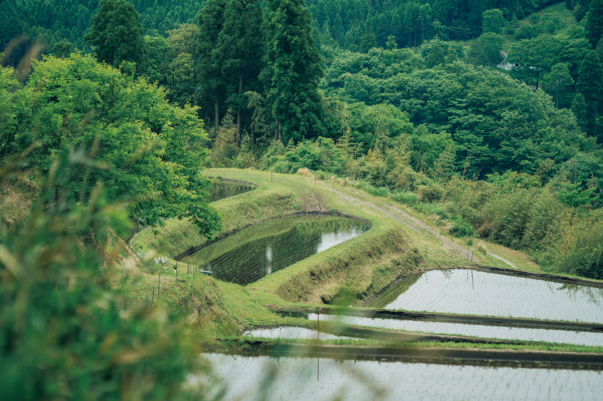
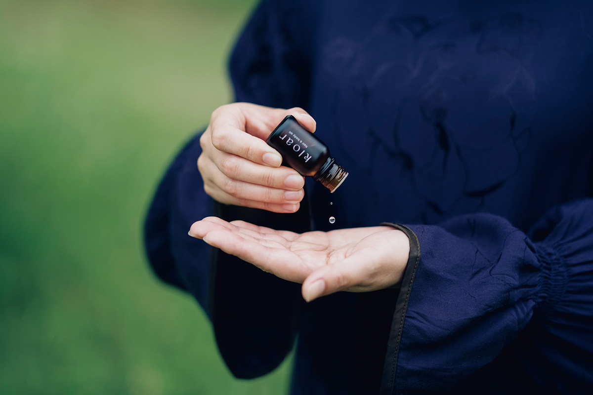
Аромат дают ветки и хвоя огуни-суги, японского кедра, которым славится Минамиогуни. Их срезают при прореживании леса и раньше просто выбрасывали. Теперь из них старым простым способом, перегонкой с паром на собственном аппарате, получают эфирное масло. На его основе парфюмер составил запах: свежесть кедра и мягкие ноты цитрусов. Делаешь глубокий вдох, и кажется, будто стоишь в лесу. В составе нет добавок, и масло бережно относится и к коже, и к природе.
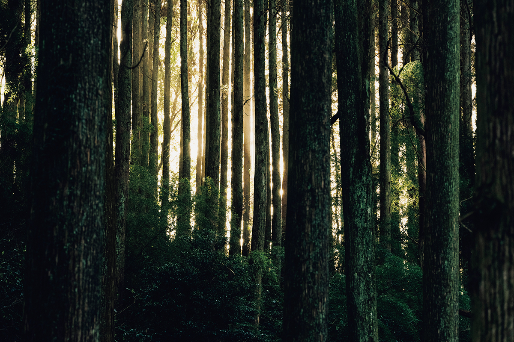
В 2024 году масло уже лежало в номерах четырёх гостиниц, в основном в округе расходилось 20–30 тысяч флаконов в год, и компания собиралась продавать его онлайн. До конца того же года планировали выпустить второй товар Kloar: масло для ванны с эфирным маслом огуни-суги и водой источников Курокавы.
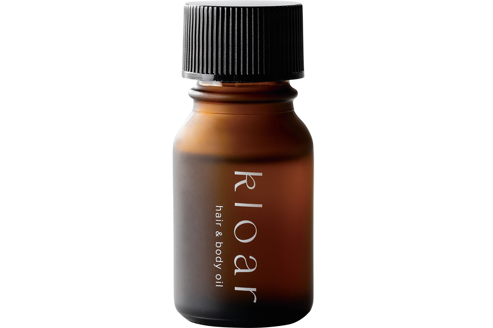
«Пока доберёшься до Курокавы, глубоко в горах, ноги отекают. Советую после купания не спеша помассировать их маслом»
молодая хозяйка «Оядо Носию»
Перед прогулкой масло можно нанести на волосы: они заблестят и легче лягут. Флакон на 10 мл помещается в косметичку, так что запах здешних мест можно увезти с собой.
Kloar
- Телефон
- +81 50-8885-9374 (компания RETEN)
- Сайт
- kloar.jp
Маршрут
Три ночи в трёх гостиницах
Как совместить тэмпаку и Kloar? Например, так. Первую ночь провести дальше всех от центра, в Yamamizuki с её купальней у ручья, или в Miyama-sansou среди рисовых полей. Вторую в Ryokan Sanga, куда едут ради кухни. Третью в «Оядо Носию», где хорошо просто отдыхать в красивых комнатах.
Yamamizuki: купальня у ручья
Девиз гостиницы: «Гора остаётся горой, вода водой, дерево деревом». Здесь стараются ничего не менять в природе вокруг. Ради купальни под открытым небом на берегу горного ручья, где кажется, что сидишь прямо в лесу, сюда приезжают со всей Японии. Вода здесь слабоминерализованная, считается мягкой для кожи, хорошо увлажняет, и после купания долго не остываешь.
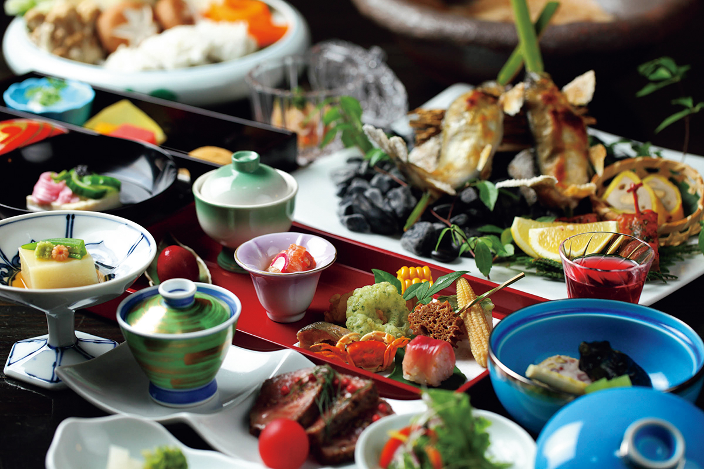
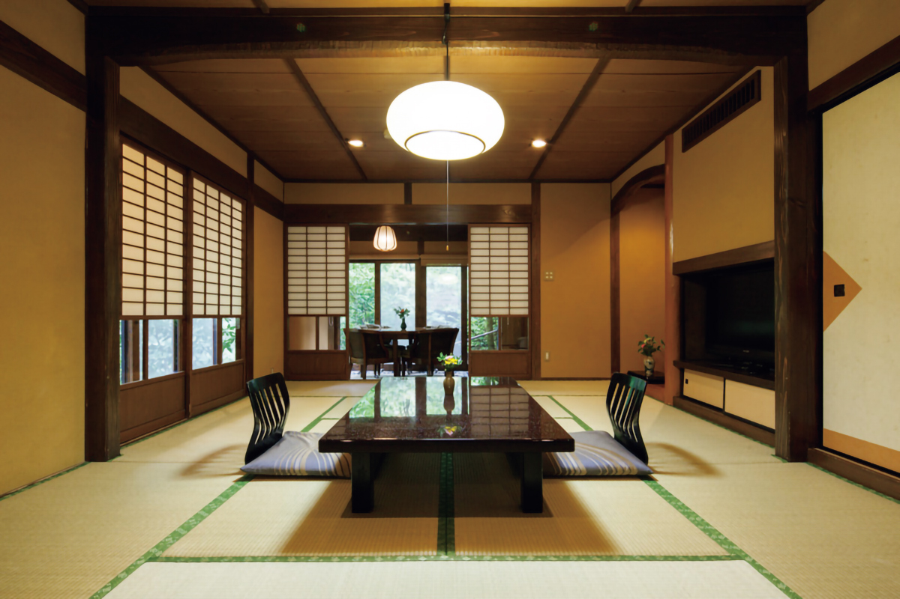
В 2024 году ночь с ужином и завтраком стоила от 20 900 иен с налогом и сервисным сбором.
Yamamizuki
- Адрес
- префектура Кумамото, уезд Асо, Минамиогуни, Мангандзи, 6392-2
- Телефон
- +81 967-44-0336
- Номера
- 21
- Заезд / выезд
- 15:00 / 11:00
- Цены / Вход
- от 20 900 иен за ночь с ужином и завтраком на человека, с налогом и сервисным сбором
- Сайт
- yamamizuki.com
Miyama-sansou: деревня под соломенными крышами
Отдельное владение Yamamizuki стоит ещё глубже в горах, чем центр Курокавы. Флигели под соломенными крышами разбросаны так, что издали похожи на маленькую горную деревню. Вокруг качается рис на полях: так выглядит Япония из старых открыток. Каждый флигель разделён на два номера, и все они устроены по-разному. Во всех номерах есть своя купальня, так что купаться можно в любое время суток.
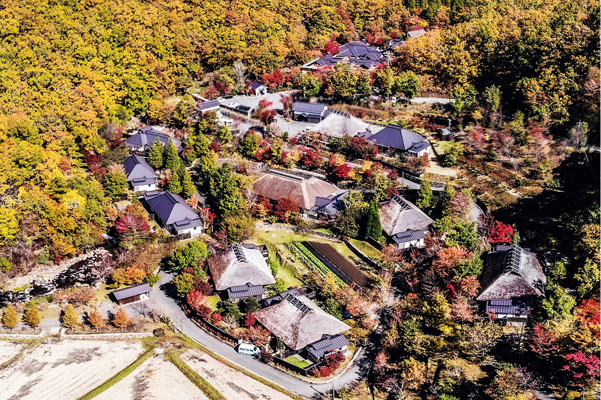
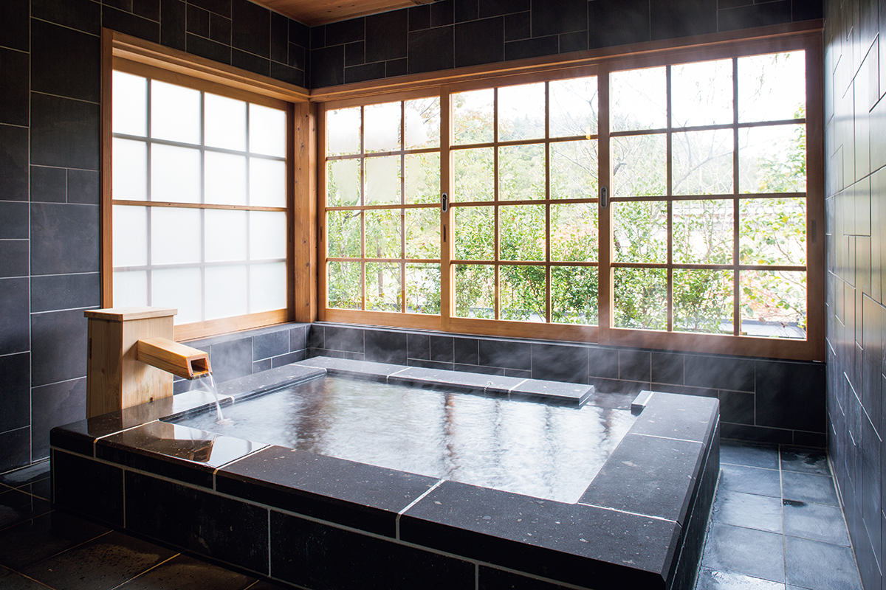
В 2024 году ночь с ужином и завтраком стоила от 34 550 иен с налогом и сервисным сбором.
Miyama-sansou
- Адрес
- префектура Кумамото, уезд Асо, Минамиогуни, Мангандзи, 6393
- Телефон
- 0120-380-154 (бесплатный номер внутри Японии)
- Номера
- 16
- Заезд / выезд
- 15:00 / 11:00
- Цены / Вход
- от 34 550 иен за ночь с ужином и завтраком на человека, с налогом и сервисным сбором
Ryokan Sanga: вкус здешней земли
Гостиница стоит на западной окраине Курокавы, в нетронутой природе, где хорошо видно, как меняются времена года. Сюда едут за кайсэки из сезонных продуктов Асо и Огуни, за местным сакэ и местным пивом. Отдельно любят завтрак: он начинается со свежего сока, который готовит хозяйка.
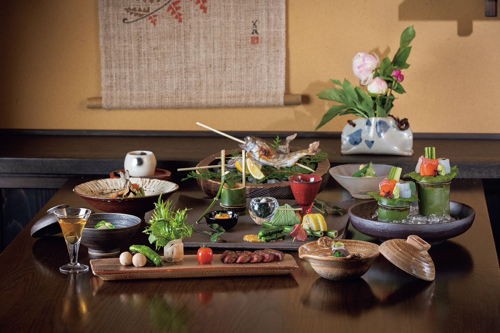
Источников здесь два. «Якуси-но ю» это слабый серный источник, известный своим целебным действием, а «Бихада-но ю», «вода для красивой кожи», это сульфатный источник, который хорошо увлажняет. Вода течёт без рециркуляции в семь купален, открытых и крытых.
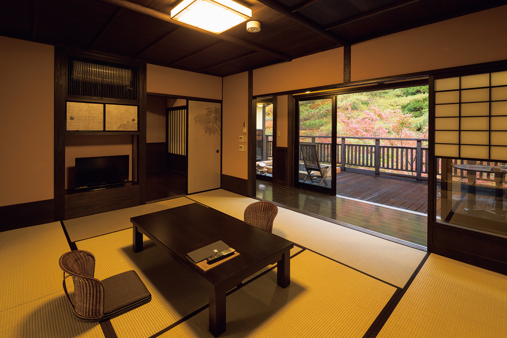
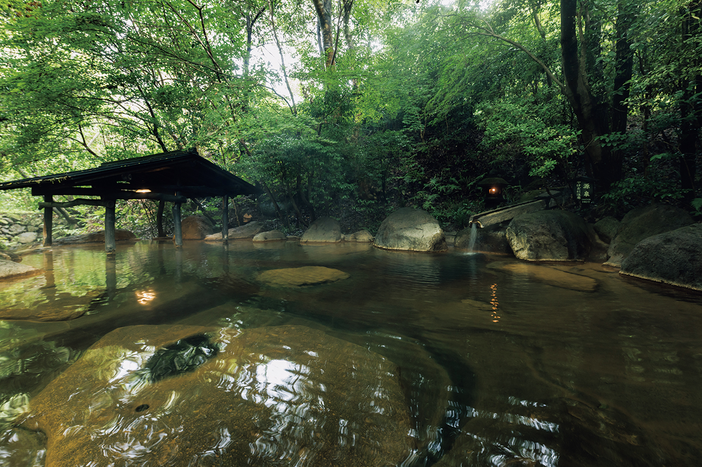
В 2024 году ночь с ужином и завтраком стоила от 22 000 иен с налогом и сервисным сбором.
Ryokan Sanga
- Адрес
- префектура Кумамото, уезд Асо, Минамиогуни, Мангандзи, 6961-1
- Телефон
- +81 967-44-0906
- Номера
- 16
- Заезд / выезд
- 15:00 / 10:00 (из флигелей в 11:00)
- Цены / Вход
- от 22 000 иен за ночь с ужином и завтраком на человека, с налогом и сервисным сбором
- Сайт
- sanga-ryokan.com
«Оядо Носию»: время замедляется
Тема гостиницы «жить вместе с природой». Хозяева сами сажали деревья и возили камни, чтобы её построить. Соломенные крыши и балки из рисовых амбаров, самым старым из которых больше 200 лет, создают ощущение, будто вернулся в давно знакомое место.
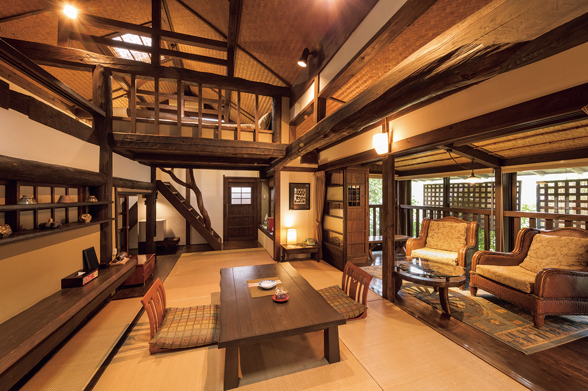
У каждого из 11 номеров свой характер: в «Сион» есть очаг ирори, у «Цуки» терраса для любования луной. Есть бар в бывшей конюшне и гостиная с колонками Mitsubishi Diatone, и каждый найдёт здесь своё любимое место.
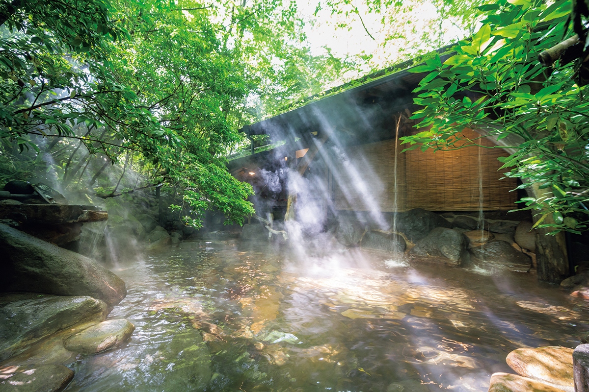
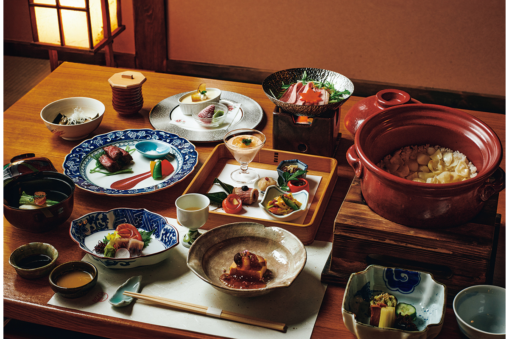
В 2024 году ночь с ужином и завтраком стоила от 27 500 иен с налогом и сервисным сбором.
«Оядо Носию»
- Адрес
- префектура Кумамото, уезд Асо, Минамиогуни, Мангандзи, 6591-1
- Телефон
- +81 967-44-0308
- Номера
- 11
- Заезд / выезд
- 15:00 / 11:00
- Цены / Вход
- от 27 500 иен за ночь с ужином и завтраком на человека, с налогом и сервисным сбором
- Сайт
- noshiyu.jp
Как добраться до онсэна Курокава
- Как добраться
- автобус «Кюсю одан» от аэропорта Асо-Кумамото, около 3 часов; автобус Nishitetsu от аэропорта Фукуоки, около 3 часов. На машине около часа от развязки Хита на скоростной дороге Оита и около 2 часов от развязки Кумамото на скоростной дороге Кюсю.